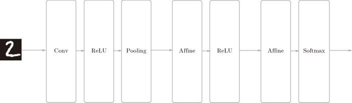

我们已经实现了卷积层和池化层，现在来组合这些层，搭建进行手写数字识别的 CNN。这里要实现如图 7-23 所示的 CNN。

图 7-23 简单 CNN 的网络构成
如图 7-23 所示，网络的构成是“Convolution - ReLU - Pooling -Affine - ReLU - Affine - Softmax”，我们将它实现为名为 SimpleConvNet 的类。
首先来看一下 SimpleConvNet 的初始化（__init__），取下面这些参数。
参数
input_dim——输入数据的维度：（通道，高，长）
conv_param——卷积层的超参数（字典）。字典的关键字如下：
filter_num——滤波器的数量
filter_size——滤波器的大小
stride——步幅
pad——填充
hidden_size——隐藏层（全连接）的神经元数量output_size——输出层（全连接）的神经元数量weitght_int_std——初始化时权重的标准差
这里，卷积层的超参数通过名为 conv_param 的字典传入。我们设想它会像 {'filter_num':30,'filter_size':5, 'pad':0, 'stride':1} 这样，保存必要的超参数值。
SimpleConvNet 的初始化的实现稍长，我们分成 3 部分来说明，首先是初始化的最开始部分。
class SimpleConvNet:
def __init__(self, input_dim=(1, 28, 28),
conv_param={'filter_num':30, 'filter_size':5,
'pad':0, 'stride':1},
hidden_size=100, output_size=10, weight_init_std=0.01):
filter_num = conv_param['filter_num']
filter_size = conv_param['filter_size']
filter_pad = conv_param['pad']
filter_stride = conv_param['stride']
input_size = input_dim[1]
conv_output_size = (input_size - filter_size + 2*filter_pad) / \
filter_stride + 1
pool_output_size = int(filter_num * (conv_output_size/2) *
(conv_output_size/2))
这里将由初始化参数传入的卷积层的超参数从字典中取了出来（以方便后面使用），然后，计算卷积层的输出大小。接下来是权重参数的初始化部分。
self.params = {}
self.params['W1'] = weight_init_std * \
np.random.randn(filter_num, input_dim[0],
filter_size, filter_size)
self.params['b1'] = np.zeros(filter_num)
self.params['W2'] = weight_init_std * \
np.random.randn(pool_output_size,
hidden_size)
self.params['b2'] = np.zeros(hidden_size)
self.params['W3'] = weight_init_std * \
np.random.randn(hidden_size, output_size)
self.params['b3'] = np.zeros(output_size)
学习所需的参数是第 1 层的卷积层和剩余两个全连接层的权重和偏置。将这些参数保存在实例变量的 params 字典中。将第 1 层的卷积层的权重设为关键字 W1，偏置设为关键字 b1。同样，分别用关键字 W2、b2 和关键字 W3、b3 来保存第 2 个和第 3 个全连接层的权重和偏置。
最后，生成必要的层。
self.layers = OrderedDict()
self.layers['Conv1'] = Convolution(self.params['W1'],
self.params['b1'],
conv_param['stride'],
conv_param['pad'])
self.layers['Relu1'] = Relu()
self.layers['Pool1'] = Pooling(pool_h=2, pool_w=2, stride=2)
self.layers['Affine1'] = Affine(self.params['W2'],
self.params['b2'])
self.layers['Relu2'] = Relu()
self.layers['Affine2'] = Affine(self.params['W3'],
self.params['b3'])
self.last_layer = softmaxwithloss()
从最前面开始按顺序向有序字典（OrderedDict）的 layers 中添加层。只有最后的 SoftmaxWithLoss 层被添加到别的变量 lastLayer 中。
以上就是 SimpleConvNet 的初始化中进行的处理。像这样初始化后，进行推理的 predict 方法和求损失函数值的 loss 方法就可以像下面这样实现。
def predict(self, x):
for layer in self.layers.values():
x = layer.forward(x)
return x
def loss(self, x, t):
y = self.predict(x)
return self.lastLayer.forward(y, t)
这里，参数 x 是输入数据，t 是教师标签。用于推理的 predict 方法从头开始依次调用已添加的层，并将结果传递给下一层。在求损失函数的 loss 方法中，除了使用 predict 方法进行的 forward 处理之外，还会继续进行 forward 处理，直到到达最后的 SoftmaxWithLoss 层。
接下来是基于误差反向传播法求梯度的代码实现。
def gradient(self, x, t):
# forward
self.loss(x, t)
# backward
dout = 1
dout = self.lastLayer.backward(dout)
layers = list(self.layers.values())
layers.reverse()
for layer in layers:
dout = layer.backward(dout)
# 设定
grads = {}
grads['W1'] = self.layers['Conv1'].dW
grads['b1'] = self.layers['Conv1'].db
grads['W2'] = self.layers['Affine1'].dW
grads['b2'] = self.layers['Affine1'].db
grads['W3'] = self.layers['Affine2'].dW
grads['b3'] = self.layers['Affine2'].db
return grads
参数的梯度通过误差反向传播法（反向传播）求出，通过把正向传播和反向传播组装在一起来完成。因为已经在各层正确实现了正向传播和反向传播的功能，所以这里只需要以合适的顺序调用即可。最后，把各个权重参数的梯度保存到 grads 字典中。这就是 SimpleConvNet 的实现。
现在，使用这个 SimpleConvNet 学习 MNIST 数据集。用于学习的代码与 4.5 节中介绍的代码基本相同，因此这里不再罗列（源代码在 ch07/train_convnet.py 中）。
如果使用 MNIST 数据集训练 SimpleConvNet，则训练数据的识别率为 99.82%，测试数据的识别率为 98.96%（每次学习的识别精度都会发生一些误差）。测试数据的识别率大约为 99%，就小型网络来说，这是一个非常高的识别率。下一章，我们会通过进一步叠加层来加深网络，实现测试数据的识别率超过 99% 的网络。
如上所述，卷积层和池化层是图像识别中必备的模块。CNN 可以有效读取图像中的某种特性，在手写数字识别中，还可以实现高精度的识别。